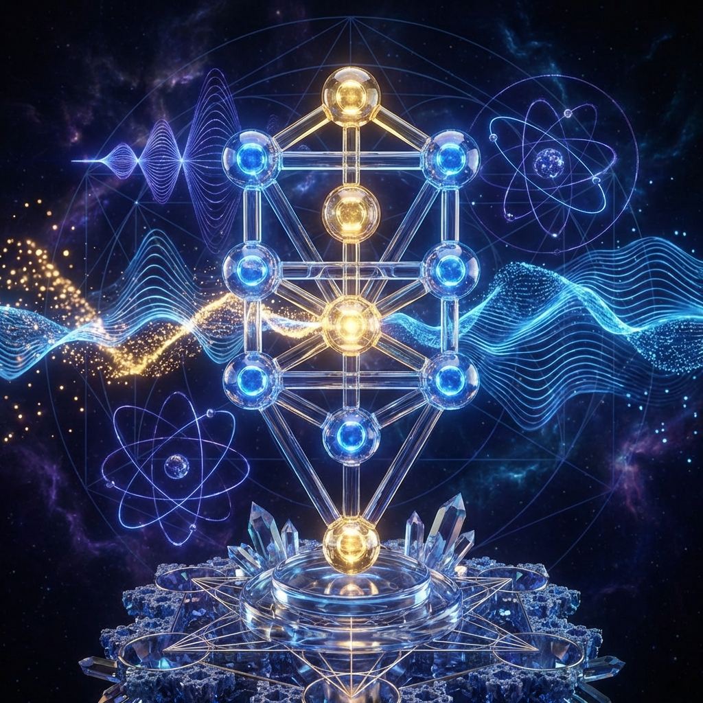

Chapter 3: The Song Of Philosophy — Section IV

Quantum Theology
The contradiction between Absolute Knowledge (God knows everything) and Free Will is the root of Quantum Mechanics.
- Wave Functions: Ideas travel as wave functions. Negative thoughts about others create interference patterns.
- The Uncertainty Principle: This principle applies to all aspects of life. It is the root of Free Will—the tension between thinking for oneself and listening to sages.
⚛️ The Idea Accelerator
TRUTH
Idea
Axiom
Logic
Rest Mass
Motion Energy
System Output: Low
Revolving Systems
Ideas rotating around a common axis generate "rest energy" and "energy of motion."
- Spinoza: Took basic axioms and revolved them to create a system with high "energy of motion" (the philosophy itself).
- Madregat HaAdam: Built on one idea (Trust) without rotation around a complex axis. It created a mass movement (rest energy) but dissipated quickly.
- The Bible & Jesus: A valid revolving system based on God and the 13 Axioms.
The Architecture of Ideas
God created the world with Chaos (Name 63) and Order (Name 45). The purpose of creation is to integrate them into Name 72.
To understand an idea, one cannot just examine it pedantically. One must be "one with the idea."
"The bricks of the universe are beauty, and its blueprint is God. Beauty is the substance and God is the concept."